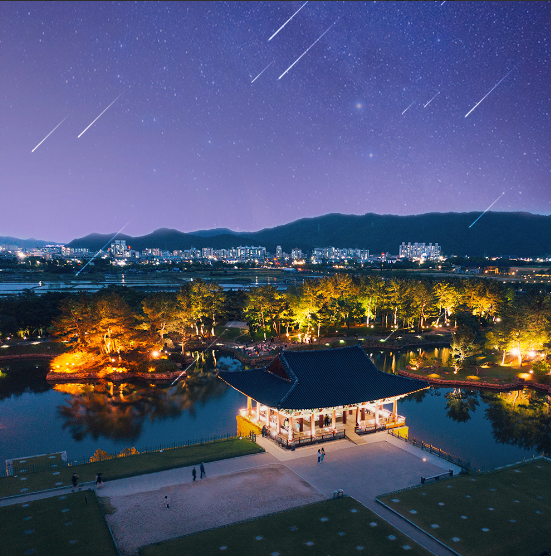
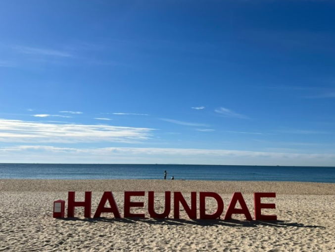

"Gwanghwamun" is a representative cultural heritage of Seoul. It was built in 1395, but burned down after the Imjin War. However, it was rebuilt in 2010 and has continued to stand to this day. Gwanghwamun consists of three arched gates; the central gate was used by the king, while the other two were used by the crown prince and royal officials. The high granite walls of the gate serve as a stepping stone to the wooden gate tower overlooking the city. Gwanghwamun is a beautiful cultural heritage site where visitors can experience Korean culture and art all at once.
"Doggung Palace and Wolji Pond" are located in Gyeongju, and are historic landmarks where the separate palace of Unified Silla was located during the North-South Korean period. They are popular night-time attractions in Gyeongju, and the pond, where the moon shines, is particularly impressive. These sites allow visitors to experience the beauty of Korea's nature and traditional hanok architecture.

The DMZ, or Demilitarized Zone, is a buffer area that extends 2 kilometers south and north from the border, and which cannot be harmed by military force. If you apply for a DMZ tour, you can also visit several interesting sites, including the Third Tunnel, which was dug by North Korea, the Unification Observatory, which offers a view of North Korea, and a museum that contains the war history of both North and South Korea.
"Haeundae" is a famous beach in Busan and one of its top attractions. It boasts a wide, white sandy beach and a beautiful coastline, and offers the best conditions for swimming with its shallow water depth and calm waves. Haeundae Beach is often the first place people think of when they think of Busan, and it's particularly famous for its modern and sophisticated atmosphere, with large and small buildings, as well as luxury hotels, lining the coastline. The beach is popular with young people all year round, not just during the summer vacation season, and is well-known to foreign tourists.

"Udo Island" is one of the islands off the coast of Jeju Island. Sea cliffs have developed on all coasts except for the southern coast and Takjinpo Port in the northeast. The entire island is made up of lava from Soemori Oreum, a parasitic volcano of Hallasan Mountain, and is a wide and fertile flat land that doesn't rise above 30 meters in altitude. The main agricultural products are sweet potatoes, barley, and garlic, and livestock breeding is also active. The nearby waters are rich in mackerel, hairtail, and abalone, which are frequently caught. Visitors can experience a different scenery and nature from Jeju Island while exploring Udo Island.